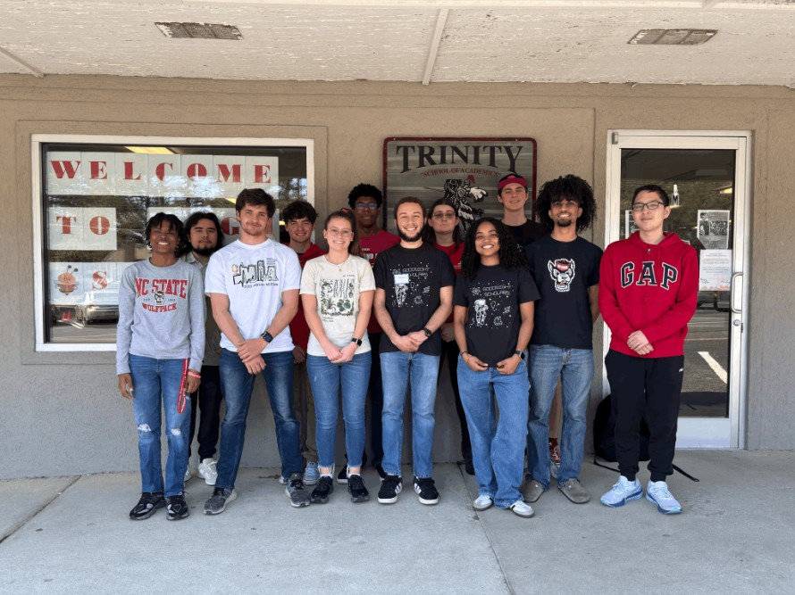

Date: October 2024 - Present
Students Leading Collaborative Computing Education (SLCCE) is a volunteer-based student organization at NC State
University which aims to create opportunities for under-resourced and under-supported middle and high school students
in North Carolina.
I have been a general body member since October 2024. I was able to contribute more especially after January, when I returned to campus from my co-op. I helped design two workshops to teach middle and high school students computing concepts. In March 2025, I helped presented an interactive workshop at Trinity Christian School, engaging students in hands-on learning.
In April 2025, I became the CSC Chair. Since then, I've lead the design for the third workshop and facilitated two future collaborations with other clubs. I look forward to our impact this next school year and onwards!